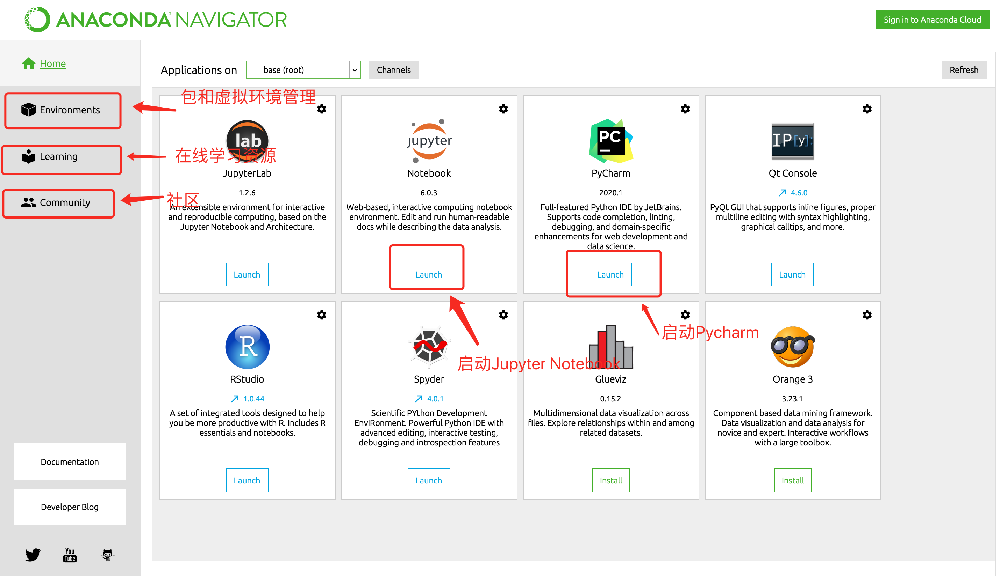
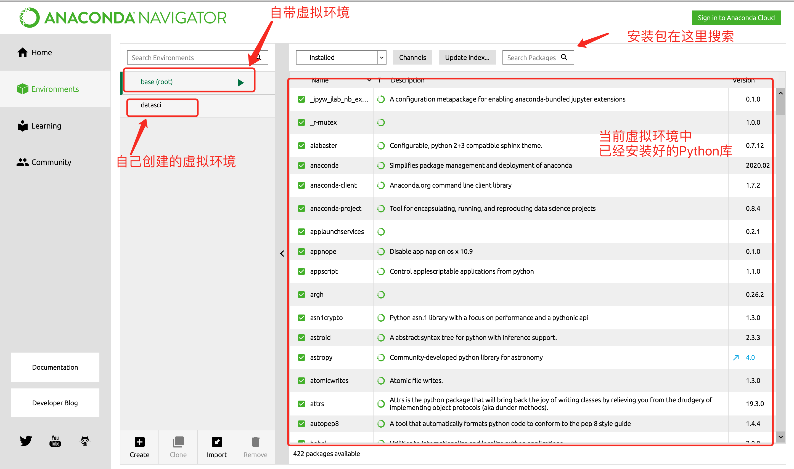

<!DOCTYPE HTML>
<html lang="en" >
    
    <head>
        
        <meta charset="UTF-8">
        <meta http-equiv="X-UA-Compatible" content="IE=edge" />
        <title>Python数据分析环境搭建 | </title>
        <meta content="text/html; charset=utf-8" http-equiv="Content-Type">
        <meta name="description" content="">
        <meta name="generator" content="GitBook 2.6.7">
        
        
        <meta name="HandheldFriendly" content="true"/>
        <meta name="viewport" content="width=device-width, initial-scale=1, user-scalable=no">
        <meta name="apple-mobile-web-app-capable" content="yes">
        <meta name="apple-mobile-web-app-status-bar-style" content="black">
        <link rel="apple-touch-icon-precomposed" sizes="152x152" href="gitbook/images/apple-touch-icon-precomposed-152.png">
        <link rel="shortcut icon" href="gitbook/images/favicon.ico" type="image/x-icon">
        
    <link rel="stylesheet" href="gitbook/style.css">
    
        
        <link rel="stylesheet" href="gitbook/plugins/gitbook-plugin-expandable-chapters-small/expandable-chapters-small.css">
        
    
        
        <link rel="stylesheet" href="gitbook/plugins/gitbook-plugin-splitter/splitter.css">
        
    
        
        <link rel="stylesheet" href="gitbook/plugins/gitbook-plugin-back-to-top-button/plugin.css">
        
    
        
        <link rel="stylesheet" href="gitbook/plugins/gitbook-plugin-chapter-fold/chapter-fold.css">
        
    
        
        <link rel="stylesheet" href="gitbook/plugins/gitbook-plugin-toc2/toc2.css">
        
    
        
        <link rel="stylesheet" href="gitbook/plugins/gitbook-plugin-tbfed-pagefooter/footer.css">
        
    
        
        <link rel="stylesheet" href="gitbook/plugins/gitbook-plugin-highlight/website.css">
        
    
        
        <link rel="stylesheet" href="gitbook/plugins/gitbook-plugin-search/search.css">
        
    
        
        <link rel="stylesheet" href="gitbook/plugins/gitbook-plugin-fontsettings/website.css">
        
    
    

        
    
    
    <link rel="next" href="./第2章-03-05_Pandas数据分析入门.html" />
    
    
    <link rel="prev" href="./01_Python数据分析简介.html" />
    

        
    </head>
    <body>
        
        
    <div class="book"
        data-level="1.2"
        data-chapter-title="Python数据分析环境搭建"
        data-filepath="02_Python数据分析开发环境搭建.md"
        data-basepath="."
        data-revision="Tue Apr 20 2021 11:46:25 GMT+0800 (中国标准时间)"
        data-innerlanguage="">
    

<div class="book-summary">
    <nav role="navigation">
        <ul class="summary">
            
            
            
            

            

            
    
        <li class="chapter " data-level="0" data-path="index.html">
            
                
                    <a href="./index.html">
                
                        <i class="fa fa-check"></i>
                        
                        Introduction
                    </a>
            
            
        </li>
    
        <li class="chapter " data-level="1" data-path="第1章-01-02_介绍及环境搭建.html">
            
                
                    <a href="./第1章-01-02_介绍及环境搭建.html">
                
                        <i class="fa fa-check"></i>
                        
                            <b>1.</b>
                        
                        Python数据分析介绍及环境搭建
                    </a>
            
            
            <ul class="articles">
                
    
        <li class="chapter " data-level="1.1" data-path="01_Python数据分析简介.html">
            
                
                    <a href="./01_Python数据分析简介.html">
                
                        <i class="fa fa-check"></i>
                        
                            <b>1.1.</b>
                        
                        Python数据分析简介
                    </a>
            
            
        </li>
    
        <li class="chapter active" data-level="1.2" data-path="02_Python数据分析开发环境搭建.html">
            
                
                    <a href="./02_Python数据分析开发环境搭建.html">
                
                        <i class="fa fa-check"></i>
                        
                            <b>1.2.</b>
                        
                        Python数据分析环境搭建
                    </a>
            
            
        </li>
    

            </ul>
            
        </li>
    
        <li class="chapter " data-level="2" data-path="第2章-03-05_Pandas数据分析入门.html">
            
                
                    <a href="./第2章-03-05_Pandas数据分析入门.html">
                
                        <i class="fa fa-check"></i>
                        
                            <b>2.</b>
                        
                        Pandas数据分析入门
                    </a>
            
            
            <ul class="articles">
                
    
        <li class="chapter " data-level="2.1" data-path="03_Pandas的DataFrame.html">
            
                
                    <a href="./03_Pandas的DataFrame.html">
                
                        <i class="fa fa-check"></i>
                        
                            <b>2.1.</b>
                        
                        Pandas的DataFrame
                    </a>
            
            
        </li>
    
        <li class="chapter " data-level="2.2" data-path="04_Pandas_数据结构.html">
            
                
                    <a href="./04_Pandas_数据结构.html">
                
                        <i class="fa fa-check"></i>
                        
                            <b>2.2.</b>
                        
                        Pandas_数据结构
                    </a>
            
            
        </li>
    
        <li class="chapter " data-level="2.3" data-path="05_Pandas数据分析入门.html">
            
                
                    <a href="./05_Pandas数据分析入门.html">
                
                        <i class="fa fa-check"></i>
                        
                            <b>2.3.</b>
                        
                        Pandas数据分析入门
                    </a>
            
            
        </li>
    

            </ul>
            
        </li>
    
        <li class="chapter " data-level="3" data-path="第3章-06-09_Pandas数据清洗.html">
            
                
                    <a href="./第3章-06-09_Pandas数据清洗.html">
                
                        <i class="fa fa-check"></i>
                        
                            <b>3.</b>
                        
                        Pandas数据清洗
                    </a>
            
            
            <ul class="articles">
                
    
        <li class="chapter " data-level="3.1" data-path="06_数据组合.html">
            
                
                    <a href="./06_数据组合.html">
                
                        <i class="fa fa-check"></i>
                        
                            <b>3.1.</b>
                        
                        数据组合
                    </a>
            
            
        </li>
    
        <li class="chapter " data-level="3.2" data-path="07_缺失数据处理.html">
            
                
                    <a href="./07_缺失数据处理.html">
                
                        <i class="fa fa-check"></i>
                        
                            <b>3.2.</b>
                        
                        缺失数据处理
                    </a>
            
            
        </li>
    
        <li class="chapter " data-level="3.3" data-path="08_整理数据.html">
            
                
                    <a href="./08_整理数据.html">
                
                        <i class="fa fa-check"></i>
                        
                            <b>3.3.</b>
                        
                        数据整理
                    </a>
            
            
        </li>
    
        <li class="chapter " data-level="3.4" data-path="09_Pandas数据类型.html">
            
                
                    <a href="./09_Pandas数据类型.html">
                
                        <i class="fa fa-check"></i>
                        
                            <b>3.4.</b>
                        
                        Pandas数据类型
                    </a>
            
            
        </li>
    

            </ul>
            
        </li>
    
        <li class="chapter " data-level="4" data-path="第4章-10-13_Pandas数据处理.html">
            
                
                    <a href="./第4章-10-13_Pandas数据处理.html">
                
                        <i class="fa fa-check"></i>
                        
                            <b>4.</b>
                        
                        Pandas数据处理
                    </a>
            
            
            <ul class="articles">
                
    
        <li class="chapter " data-level="4.1" data-path="10_Apply自定义函数.html">
            
                
                    <a href="./10_Apply自定义函数.html">
                
                        <i class="fa fa-check"></i>
                        
                            <b>4.1.</b>
                        
                        Apply自定义函数
                    </a>
            
            
        </li>
    
        <li class="chapter " data-level="4.2" data-path="11_数据分组.html">
            
                
                    <a href="./11_数据分组.html">
                
                        <i class="fa fa-check"></i>
                        
                            <b>4.2.</b>
                        
                        数据分组
                    </a>
            
            
        </li>
    
        <li class="chapter " data-level="4.3" data-path="12_数据透视表.html">
            
                
                    <a href="./12_数据透视表.html">
                
                        <i class="fa fa-check"></i>
                        
                            <b>4.3.</b>
                        
                        数据透视表
                    </a>
            
            
        </li>
    
        <li class="chapter " data-level="4.4" data-path="13_datetime数据类型.html">
            
                
                    <a href="./13_datetime数据类型.html">
                
                        <i class="fa fa-check"></i>
                        
                            <b>4.4.</b>
                        
                        datetime数据类型
                    </a>
            
            
        </li>
    

            </ul>
            
        </li>
    
        <li class="chapter " data-level="5" data-path="第5章-14-17_Python数据可视化.html">
            
                
                    <a href="./第5章-14-17_Python数据可视化.html">
                
                        <i class="fa fa-check"></i>
                        
                            <b>5.</b>
                        
                        Python数据可视化
                    </a>
            
            
            <ul class="articles">
                
    
        <li class="chapter " data-level="5.1" data-path="14_Matplotlib绘图.html">
            
                
                    <a href="./14_Matplotlib绘图.html">
                
                        <i class="fa fa-check"></i>
                        
                            <b>5.1.</b>
                        
                        Matplotlib绘图
                    </a>
            
            
        </li>
    
        <li class="chapter " data-level="5.2" data-path="15_Pandas绘图.html">
            
                
                    <a href="./15_Pandas绘图.html">
                
                        <i class="fa fa-check"></i>
                        
                            <b>5.2.</b>
                        
                        Pandas绘图
                    </a>
            
            
        </li>
    
        <li class="chapter " data-level="5.3" data-path="16_Seaborn绘图.html">
            
                
                    <a href="./16_Seaborn绘图.html">
                
                        <i class="fa fa-check"></i>
                        
                            <b>5.3.</b>
                        
                        Seaborn绘图
                    </a>
            
            
        </li>
    
        <li class="chapter " data-level="5.4" data-path="17_Pyecharts绘图.html">
            
                
                    <a href="./17_Pyecharts绘图.html">
                
                        <i class="fa fa-check"></i>
                        
                            <b>5.4.</b>
                        
                        Pyecharts绘图
                    </a>
            
            
        </li>
    

            </ul>
            
        </li>
    
        <li class="chapter " data-level="6" data-path="第6章-18-20_综合案例.html">
            
                
                    <a href="./第6章-18-20_综合案例.html">
                
                        <i class="fa fa-check"></i>
                        
                            <b>6.</b>
                        
                        综合案例
                    </a>
            
            
            <ul class="articles">
                
    
        <li class="chapter " data-level="6.1" data-path="18_综合案例_Appstore数据分析.html">
            
                
                    <a href="./18_综合案例_Appstore数据分析.html">
                
                        <i class="fa fa-check"></i>
                        
                            <b>6.1.</b>
                        
                        综合案例_Appstore数据分析
                    </a>
            
            
        </li>
    
        <li class="chapter " data-level="6.2" data-path="19_综合案例_优衣库销售数据分析.html">
            
                
                    <a href="./19_综合案例_优衣库销售数据分析.html">
                
                        <i class="fa fa-check"></i>
                        
                            <b>6.2.</b>
                        
                        综合案例_优衣库销售数据分析
                    </a>
            
            
        </li>
    
        <li class="chapter " data-level="6.3" data-path="20_综合案例_RFM用户分群.html">
            
                
                    <a href="./20_综合案例_RFM用户分群.html">
                
                        <i class="fa fa-check"></i>
                        
                            <b>6.3.</b>
                        
                        综合案例_RFM用户分群
                    </a>
            
            
        </li>
    

            </ul>
            
        </li>
    


            
            <li class="divider"></li>
            <li>
                <a href="https://www.gitbook.com" target="blank" class="gitbook-link">
                    Published with GitBook
                </a>
            </li>
            
        </ul>
    </nav>
</div>

    <div class="book-body">
        <div class="body-inner">
            <div class="book-header" role="navigation">
    <!-- Actions Left -->
    

    <!-- Title -->
    <h1>
        <i class="fa fa-circle-o-notch fa-spin"></i>
        <a href="./" ></a>
    </h1>
</div>

            <div class="page-wrapper" tabindex="-1" role="main">
                <div class="page-inner">
                
                
                    <section class="normal" id="section-">
                    
                        <h1 id="python&#x6570;&#x636E;&#x5206;&#x6790;&#x5F00;&#x53D1;&#x73AF;&#x5883;&#x642D;&#x5EFA;">Python&#x6570;&#x636E;&#x5206;&#x6790;&#x5F00;&#x53D1;&#x73AF;&#x5883;&#x642D;&#x5EFA;</h1>
<h2 id="&#x5B66;&#x4E60;&#x76EE;&#x6807;">&#x5B66;&#x4E60;&#x76EE;&#x6807;</h2>
<ul>
<li>&#x72EC;&#x7ACB;&#x5B8C;&#x6210;&#x5F00;&#x53D1;&#x73AF;&#x5883;&#x642D;&#x5EFA;</li>
<li>&#x638C;&#x63E1; Anaconda&#x7684;&#x4F7F;&#x7528;&#x65B9;&#x6CD5;</li>
<li>&#x638C;&#x63E1; Jupyter Notebook&#x7684;&#x4F7F;&#x7528;&#x65B9;&#x6CD5;</li>
</ul>
<h2 id="1-&#x5F00;&#x53D1;&#x73AF;&#x5883;&#x642D;&#x5EFA;">1 &#x5F00;&#x53D1;&#x73AF;&#x5883;&#x642D;&#x5EFA;</h2>
<h3 id="11--&#x7B80;&#x4ECB;">1.1  &#x7B80;&#x4ECB;</h3>
<ul>
<li>Anaconda &#x662F;&#x6700;&#x6D41;&#x884C;&#x7684;&#x6570;&#x636E;&#x5206;&#x6790;&#x5E73;&#x53F0;&#xFF0C;&#x5168;&#x7403;&#x4E24;&#x5343;&#x591A;&#x4E07;&#x4EBA;&#x5728;&#x4F7F;&#x7528;</li>
<li>Anaconda &#x9644;&#x5E26;&#x4E86;&#x4E00;&#x5927;&#x6279;&#x5E38;&#x7528;&#x6570;&#x636E;&#x79D1;&#x5B66;&#x5305;<ul>
<li>conda</li>
<li>Python </li>
<li>150 &#x591A;&#x4E2A;&#x79D1;&#x5B66;&#x5305;&#x53CA;&#x5176;&#x4F9D;&#x8D56;&#x9879;</li>
</ul>
</li>
<li>Anaconda &#x662F;&#x5728; conda&#xFF08;&#x4E00;&#x4E2A;&#x5305;&#x7BA1;&#x7406;&#x5668;&#x548C;&#x73AF;&#x5883;&#x7BA1;&#x7406;&#x5668;&#xFF09;&#x4E0A;&#x53D1;&#x5C55;&#x51FA;&#x6765;&#x7684;<ul>
<li>Conda&#x53EF;&#x4EE5;&#x5E2E;&#x52A9;&#x4F60;&#x5728;&#x8BA1;&#x7B97;&#x673A;&#x4E0A;&#x5B89;&#x88C5;&#x548C;&#x7BA1;&#x7406;&#x6570;&#x636E;&#x5206;&#x6790;&#x76F8;&#x5173;&#x5305;</li>
<li>Anaconda&#x7684;&#x4ED3;&#x5E93;&#x4E2D;&#x5305;&#x542B;&#x4E86;7000&#x591A;&#x4E2A;&#x6570;&#x636E;&#x79D1;&#x5B66;&#x76F8;&#x5173;&#x7684;&#x5F00;&#x5143;&#x5E93;</li>
</ul>
</li>
<li>Anaconda &#x5305;&#x542B;&#x4E86;&#x865A;&#x62DF;&#x73AF;&#x5883;&#x7BA1;&#x7406;&#x5DE5;&#x5177;<ul>
<li>&#x901A;&#x8FC7;&#x865A;&#x62DF;&#x73AF;&#x5883;&#x53EF;&#x4EE5;&#x4F7F;&#x4E0D;&#x540C;&#x7684;Python&#x6216;&#x8005;&#x5F00;&#x5143;&#x5E93;&#x7684;&#x7248;&#x672C;&#x540C;&#x65F6;&#x5B58;&#x5728;</li>
</ul>
</li>
</ul>
<h3 id="12-anaconda&#x5B89;&#x88C5;">1.2 Anaconda&#x5B89;&#x88C5;</h3>
<ul>
<li><p>Anaconda &#x53EF;&#x7528;&#x4E8E;&#x591A;&#x4E2A;&#x5E73;&#x53F0;&#xFF08; Windows&#x3001;Mac OS X &#x548C; Linux&#xFF09;</p>
</li>
<li><p>&#x53EF;&#x4EE5;&#x5728;&#x5B98;&#x7F51;&#x4E0A;<a href="https://www.anaconda.com/products/individual" target="_blank">&#x4E0B;&#x8F7D;</a>&#x5BF9;&#x5E94;&#x5E73;&#x53F0;&#x7684;&#x5B89;&#x88C5;&#x5305;</p>
</li>
<li><p>&#x5982;&#x679C;&#x8BA1;&#x7B97;&#x673A;&#x4E0A;&#x5DF2;&#x7ECF;&#x5B89;&#x88C5;&#x4E86; Python&#xFF0C;&#x5B89;&#x88C5;&#x4E0D;&#x4F1A;&#x5BF9;&#x4F60;&#x6709;&#x4EFB;&#x4F55;&#x5F71;&#x54CD;</p>
</li>
<li><p>&#x5B89;&#x88C5;&#x7684;&#x8FC7;&#x7A0B;&#x5F88;&#x7B80;&#x5355;&#xFF0C;&#x4E00;&#x8DEF;&#x4E0B;&#x4E00;&#x6B65;&#x5373;&#x53EF;</p>
</li>
</ul>
<h2 id="2-anaconda&#x7684;&#x4F7F;&#x7528;">2 Anaconda&#x7684;&#x4F7F;&#x7528;</h2>
<h3 id="21-anaconda&#x7684;&#x754C;&#x9762;">2.1 Anaconda&#x7684;&#x754C;&#x9762;</h3>
<ul>
<li><p>&#x5B89;&#x88C5;&#x597D;Anaconda&#x540E;&#x70B9;&#x51FB;&#x56FE;&#x6807;&#x53EF;&#x4EE5;&#x6253;&#x5F00;Anaconda&#x7684;&#x7BA1;&#x7406;&#x9762;&#x677F;</p>
<p></p>
</li>
<li></li>
</ul>
<h3 id="22-anaconda&#x7684;&#x5305;&#x7BA1;&#x7406;&#x529F;&#x80FD;">2.2 Anaconda&#x7684;&#x5305;&#x7BA1;&#x7406;&#x529F;&#x80FD;</h3>
<ul>
<li><p>&#x70B9;&#x51FB;Environment&#x9009;&#x9879;&#x5361;&#xFF0C;&#x8FDB;&#x5165;&#x5230;&#x73AF;&#x5883;&#x7BA1;&#x7406;&#x754C;&#x9762;</p>
<p></p>
<ul>
<li><p>&#x53EF;&#x4EE5;&#x901A;&#x8FC7;&#x7BA1;&#x7406;&#x754C;&#x9762;&#x5B89;&#x88C5;</p>
</li>
<li><p>&#x53EF;&#x4EE5;&#x901A;&#x8FC7;conda install &#x5B89;&#x88C5;</p>
<pre><code class="lang-shell">conda install &#x5305;&#x540D;&#x5B57;
</code></pre>
</li>
<li><p>&#x53EF;&#x4EE5;&#x901A;&#x8FC7;pip install &#x5B89;&#x88C5;</p>
<pre><code class="lang-shell">pip install &#x5305;&#x540D;&#x5B57;
</code></pre>
</li>
<li><p>&#x5B89;&#x88C5;&#x5176;&#x4ED6;&#x5305;&#x901F;&#x5EA6;&#x6162;&#x53EF;&#x4EE5;&#x6307;&#x5B9A;&#x56FD;&#x5185;&#x955C;&#x50CF;</p>
<pre><code class="lang-shell"># &#x963F;&#x91CC;&#x4E91;&#xFF1A;https://mirrors.aliyun.com/pypi/simple/
# &#x8C46;&#x74E3;&#xFF1A;https://pypi.douban.com/simple/
# &#x6E05;&#x534E;&#x5927;&#x5B66;&#xFF1A;https://pypi.tuna.tsinghua.edu.cn/simple/
# &#x4E2D;&#x56FD;&#x79D1;&#x5B66;&#x6280;&#x672F;&#x5927;&#x5B66; http://pypi.mirrors.ustc.edu.cn/simple/

pip install &#x5305;&#x540D; -i https://mirrors.aliyun.com/pypi/simple/  #&#x901A;&#x8FC7;&#x963F;&#x91CC;&#x4E91;&#x955C;&#x50CF;&#x5B89;&#x88C5;
</code></pre>
</li>
</ul>
</li>
</ul>
<h3 id="23-anaconda&#x7684;&#x865A;&#x62DF;&#x73AF;&#x5883;&#x7BA1;&#x7406;">2.3 Anaconda&#x7684;&#x865A;&#x62DF;&#x73AF;&#x5883;&#x7BA1;&#x7406;</h3>
<ul>
<li><p>&#x865A;&#x62DF;&#x73AF;&#x5883;&#x7684;&#x4F5C;&#x7528;</p>
<ul>
<li>&#x5F88;&#x591A;&#x5F00;&#x6E90;&#x5E93;&#x7248;&#x672C;&#x5347;&#x7EA7;&#x540E;API&#x6709;&#x53D8;&#x5316;&#xFF0C;&#x8001;&#x7248;&#x672C;&#x7684;&#x4EE3;&#x7801;&#x4E0D;&#x80FD;&#x5728;&#x65B0;&#x7248;&#x672C;&#x4E2D;&#x8FD0;&#x884C;</li>
<li>&#x5C06;&#x4E0D;&#x540C;Python&#x7248;&#x672C;/&#x76F8;&#x540C;&#x5F00;&#x6E90;&#x5E93;&#x7684;&#x4E0D;&#x540C;&#x7248;&#x672C;&#x9694;&#x79BB;</li>
<li>&#x4E0D;&#x540C;&#x7248;&#x672C;&#x7684;&#x4EE3;&#x7801;&#x5728;&#x4E0D;&#x540C;&#x7684;&#x865A;&#x62DF;&#x73AF;&#x5883;&#x4E2D;&#x8FD0;&#x884C;</li>
</ul>
</li>
<li><p>&#x901A;&#x8FC7;Anaconda&#x754C;&#x9762;&#x521B;&#x5EFA;&#x865A;&#x62DF;&#x73AF;&#x5883;</p>
<p></p>
</li>
<li><p>&#x901A;&#x8FC7;&#x547D;&#x4EE4;&#x884C;&#x521B;&#x5EFA;&#x865A;&#x62DF;&#x73AF;&#x5883;</p>
<pre><code class="lang-shell">conda create -n &#x865A;&#x62DF;&#x73AF;&#x5883;&#x540D;&#x5B57; python=python&#x7248;&#x672C;  #&#x521B;&#x5EFA;&#x865A;&#x62DF;&#x73AF;&#x5883;
conda activate &#x865A;&#x62DF;&#x73AF;&#x5883;&#x540D;&#x5B57; #&#x8FDB;&#x5165;&#x865A;&#x62DF;&#x73AF;&#x5883;
conda deactivate &#x865A;&#x62DF;&#x73AF;&#x5883;&#x540D;&#x5B57; #&#x9000;&#x51FA;&#x865A;&#x62DF;&#x73AF;&#x5883;
conda remove -n &#x865A;&#x62DF;&#x73AF;&#x5883;&#x540D;&#x5B57; --all  #&#x5220;&#x9664;&#x865A;&#x62DF;&#x73AF;&#x5883;
</code></pre>
</li>
</ul>
<h2 id="3-jupyter-notebook&#x7684;&#x4F7F;&#x7528;">3 Jupyter Notebook&#x7684;&#x4F7F;&#x7528;</h2>
<h3 id="31-&#x542F;&#x52A8;-jupyter-notebook">3.1 &#x542F;&#x52A8; Jupyter Notebook</h3>
<ul>
<li>&#x901A;&#x8FC7;Anaconda&#x542F;&#x52A8; Jupyter Notebook </li>
</ul>
<p></p>
<ul>
<li><p>&#x901A;&#x8FC7;&#x7EC8;&#x7AEF;&#x542F;&#x52A8; Jupyter Notebook</p>
<pre><code class="lang-shell">conda activate &#x865A;&#x62DF;&#x73AF;&#x5883;&#x540D;&#x5B57;
jupyter notebook
</code></pre>
</li>
</ul>
<h3 id="32-jupyter-notebook&#x4F7F;&#x7528;&#x7B80;&#x4ECB;">3.2 Jupyter Notebook&#x4F7F;&#x7528;&#x7B80;&#x4ECB;</h3>
<ul>
<li><p>&#x65B0;&#x5EFA;notebook&#x6587;&#x6863;</p>
<ul>
<li>Jupyter Notebook &#x6587;&#x6863;&#x7684;&#x6269;&#x5C55;&#x540D;&#x4E3A;.ipynb</li>
</ul>
<p></p>
<ul>
<li>&#x65B0;&#x5EFA;&#x6587;&#x4EF6;&#x4E4B;&#x540E;&#x4F1A;&#x6253;&#x5F00;Notebook&#x754C;&#x9762;</li>
</ul>
<p></p>
</li>
<li><p>Jupyter Notebook&#x7684;cell</p>
<ul>
<li>&#x4EE3;&#x7801;&#x7684;&#x8F93;&#x5165;&#x6846;&#x548C;&#x8F93;&#x51FA;&#x663E;&#x793A;&#x7684;&#x7ED3;&#x679C;&#x5C31;&#x662F;cell</li>
<li>&#x83DC;&#x5355;&#x680F;&#x4E2D;&#x76F8;&#x5173;&#x6309;&#x94AE;&#x529F;&#x80FD;&#x4ECB;&#x7ECD;&#xFF1A;</li>
</ul>
<p></p>
</li>
<li><p>&#x5E38;&#x7528;&#x5FEB;&#x6377;&#x952E;</p>
<ul>
<li>&#x4E24;&#x79CD;&#x6A21;&#x5F0F;&#x901A;&#x7528;&#x5FEB;&#x6377;&#x952E;<ul>
<li><strong><code>Shift+Enter</code>&#xFF0C;&#x6267;&#x884C;&#x672C;&#x5355;&#x5143;&#x4EE3;&#x7801;&#xFF0C;&#x5E76;&#x8DF3;&#x8F6C;&#x5230;&#x4E0B;&#x4E00;&#x5355;&#x5143;</strong></li>
<li><strong><code>Ctrl+Enter</code>&#xFF0C;&#x6267;&#x884C;&#x672C;&#x5355;&#x5143;&#x4EE3;&#x7801;&#xFF0C;&#x7559;&#x5728;&#x672C;&#x5355;&#x5143;</strong></li>
</ul>
</li>
</ul>
<p>cell&#x884C;&#x53F7;&#x524D;&#x7684; * &#xFF0C;&#x8868;&#x793A;&#x4EE3;&#x7801;&#x6B63;&#x5728;&#x8FD0;&#x884C;</p>
<ul>
<li><p>&#x547D;&#x4EE4;&#x6A21;&#x5F0F;</p>
<p>&#xFF1A;&#x6309;ESC&#x8FDB;&#x5165;</p>
<ul>
<li><code>Y</code>&#xFF0C;cell&#x5207;&#x6362;&#x5230;Code&#x6A21;&#x5F0F;</li>
<li><code>M</code>&#xFF0C;cell&#x5207;&#x6362;&#x5230;Markdown&#x6A21;&#x5F0F;</li>
<li><code>A</code>&#xFF0C;&#x5728;&#x5F53;&#x524D;cell&#x7684;&#x4E0A;&#x9762;&#x6DFB;&#x52A0;cell</li>
<li><code>B</code>&#xFF0C;&#x5728;&#x5F53;&#x524D;cell&#x7684;&#x4E0B;&#x9762;&#x6DFB;&#x52A0;cell</li>
<li><code>&#x53CC;&#x51FB;D</code>&#xFF1A;&#x5220;&#x9664;&#x5F53;&#x524D;cell</li>
</ul>
</li>
<li><p>&#x7F16;&#x8F91;&#x6A21;&#x5F0F;</p>
<p>&#xFF1A;&#x6309;Enter&#x8FDB;&#x5165;</p>
<ul>
<li>&#x591A;&#x5149;&#x6807;&#x64CD;&#x4F5C;&#xFF1A;<code>Ctrl&#x952E;&#x70B9;&#x51FB;&#x9F20;&#x6807;</code>&#xFF08;Mac:CMD+&#x70B9;&#x51FB;&#x9F20;&#x6807;&#xFF09;</li>
<li>&#x56DE;&#x9000;&#xFF1A;<code>Ctrl+Z</code>&#xFF08;Mac:CMD+Z&#xFF09;</li>
<li>&#x91CD;&#x505A;&#xFF1A;<code>Ctrl+Y</code>&#xFF08;Mac:CMD+Y)</li>
<li>&#x8865;&#x5168;&#x4EE3;&#x7801;&#xFF1A;&#x53D8;&#x91CF;&#x3001;&#x65B9;&#x6CD5;&#x540E;&#x8DDF;<code>Tab&#x952E;</code></li>
<li>&#x4E3A;&#x4E00;&#x884C;&#x6216;&#x591A;&#x884C;&#x4EE3;&#x7801;&#x6DFB;&#x52A0;/&#x53D6;&#x6D88;&#x6CE8;&#x91CA;&#xFF1A;<code>Ctrl+/</code>&#xFF08;Mac:CMD+/&#xFF09;</li>
</ul>
</li>
</ul>
</li>
<li><p>Jupyter notebook&#x7684;&#x529F;&#x80FD;&#x6269;&#x5C55;</p>
<ul>
<li><p>&#x5B89;&#x88C5;jupyter_contrib_nbextensions&#x5E93;</p>
<pre><code class="lang-shell">#&#x8FDB;&#x5165;&#x5230;&#x865A;&#x62DF;&#x73AF;&#x5883;&#x4E2D;
conda activate &#x865A;&#x62DF;&#x73AF;&#x5883;&#x540D;&#x5B57;
#&#x5B89;&#x88C5; jupyter_contrib_nbextensions
pip install jupyter_contrib_nbextensions
jupyter contrib nbextension install --user --skip-running-check
</code></pre>
</li>
<li><p>&#x5B89;&#x88C5;&#x7ED3;&#x675F;&#x540E;&#x542F;&#x52A8;jupyter notebook</p>
<p></p>
</li>
<li><p>&#x914D;&#x7F6E;&#x6269;&#x5C55;&#x529F;&#x80FD;</p>
<ul>
<li>&#x5728;&#x539F;&#x6765;&#x7684;&#x57FA;&#x7840;&#x4E0A;&#x52FE;&#x9009;&#xFF1A; &#x201C;Table of Contents&#x201D; &#x4EE5;&#x53CA; &#x201C;Hinterland&#x201D;</li>
</ul>
<p></p>
</li>
</ul>
</li>
</ul>
<h3 id="33-jupyter-notebook&#x4E2D;&#x4F7F;&#x7528;markdown">3.3 Jupyter Notebook&#x4E2D;&#x4F7F;&#x7528;Markdown</h3>
<ul>
<li>&#x5728;&#x547D;&#x4EE4;&#x6A21;&#x5F0F;&#x4E2D;&#xFF0C;&#x6309;M&#x5373;&#x53EF;&#x8FDB;&#x5165;&#x5230;Markdown&#x7F16;&#x8F91;&#x6A21;&#x5F0F;</li>
<li><p>&#x4F7F;&#x7528;Markdown&#x8BED;&#x6CD5;&#x53EF;&#x4EE5;&#x5728;&#x4EE3;&#x7801;&#x95F4;&#x7A7F;&#x63D2;&#x683C;&#x5F0F;&#x5316;&#x7684;&#x6587;&#x672C;&#x4F5C;&#x4E3A;&#x8BF4;&#x660E;&#x6587;&#x5B57;&#x6216;&#x7B14;&#x8BB0;</p>
</li>
<li><p>Markdown&#x8BED;&#x6CD5;&#x7B80;&#x4ECB;</p>
<ul>
<li>&#x638C;&#x63E1;&#x6807;&#x9898;&#x548C;&#x7F29;&#x8FDB;</li>
</ul>
<p></p>
</li>
</ul>
<h2 id="&#x603B;&#x7ED3;">&#x603B;&#x7ED3;</h2>
<ul>
<li>&#x72EC;&#x7ACB;&#x5B8C;&#x6210;&#x5F00;&#x53D1;&#x73AF;&#x5883;&#x642D;&#x5EFA;<ul>
<li>&#x5B89;&#x88C5;Anaconda&#x4F5C;&#x4E3A;&#x5F00;&#x53D1;&#x73AF;&#x5883;&#x7684;&#x7BA1;&#x7406;&#x5668;</li>
</ul>
</li>
<li>&#x638C;&#x63E1; Anaconda &#x7684;&#x4F7F;&#x7528;&#x65B9;&#x6CD5;<ul>
<li>Anaconda&#x53EF;&#x4EE5;&#x7BA1;&#x7406;&#x865A;&#x62DF;&#x73AF;&#x5883;</li>
<li>Anaconda&#x53EF;&#x4EE5;&#x7BA1;&#x7406;&#x865A;&#x62DF;&#x73AF;&#x5883;&#x4E2D;&#x7684;&#x8F6F;&#x4EF6;&#x5305;</li>
</ul>
</li>
<li>&#x638C;&#x63E1; Jupyter Notebook &#x7684;&#x4F7F;&#x7528;&#x65B9;&#x6CD5;<ul>
<li>&#x6269;&#x5C55;&#x540D;&#x4E3A;.ipynb</li>
<li>&#x5728;cell&#x4E2D;&#x7F16;&#x8F91;&#x4EE3;&#x7801;&#x548C;&#x5C55;&#x793A;&#x8F93;&#x51FA;&#x7ED3;&#x679C;</li>
<li>&#x652F;&#x6301;Markdown&#x8BED;&#x6CD5; </li>
</ul>
</li>
</ul>
<footer class="page-footer"><span class="copyright">&#xA9;2021.4 &#x539F;&#x6EE1; all right reserved&#xFF0C;powered by Gitbook</span><span class="footer-modification">&#x8BE5;&#x6587;&#x4EF6;&#x4FEE;&#x8BA2;&#x65F6;&#x95F4;&#xFF1A;
2020-08-26 21:40:43
</span></footer>
                    
                    </section>
                
                
                </div>
            </div>
        </div>

        
        <a href="./01_Python数据分析简介.html" class="navigation navigation-prev " aria-label="Previous page: Python数据分析简介"><i class="fa fa-angle-left"></i></a>
        
        
        <a href="./第2章-03-05_Pandas数据分析入门.html" class="navigation navigation-next " aria-label="Next page: Pandas数据分析入门"><i class="fa fa-angle-right"></i></a>
        
    </div>
</div>

        
<script src="gitbook/app.js"></script>

    
    <script src="gitbook/plugins/gitbook-plugin-expandable-chapters-small/expandable-chapters-small.js"></script>
    

    
    <script src="gitbook/plugins/gitbook-plugin-splitter/splitter.js"></script>
    

    
    <script src="gitbook/plugins/gitbook-plugin-back-to-top-button/plugin.js"></script>
    

    
    <script src="gitbook/plugins/gitbook-plugin-chapter-fold/chapter-fold.js"></script>
    

    
    <script src="gitbook/plugins/gitbook-plugin-toc2/toc2.js"></script>
    

    
    <script src="gitbook/plugins/gitbook-plugin-search/lunr.min.js"></script>
    

    
    <script src="gitbook/plugins/gitbook-plugin-search/search.js"></script>
    

    
    <script src="gitbook/plugins/gitbook-plugin-sharing/buttons.js"></script>
    

    
    <script src="gitbook/plugins/gitbook-plugin-fontsettings/buttons.js"></script>
    

<script>
require(["gitbook"], function(gitbook) {
    var config = {"expandable-chapters-small":{},"toc2":{"addClass":true,"className":"toc"},"tbfed-pagefooter":{"copyright":"©2021.4 原满","modify_label":"该文件修订时间：","modify_format":"YYYY-MM-DD HH:mm:ss"},"splitter":{},"back-to-top-button":{},"chapter-fold":{},"highlight":{},"search":{"maxIndexSize":1000000},"sharing":{"facebook":true,"twitter":true,"google":false,"weibo":false,"instapaper":false,"vk":false,"all":["facebook","google","twitter","weibo","instapaper"]},"fontsettings":{"theme":"white","family":"sans","size":2}};
    gitbook.start(config);
});
</script>

        
    </body>
    
</html>
